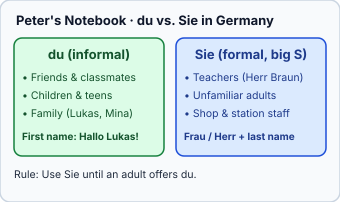
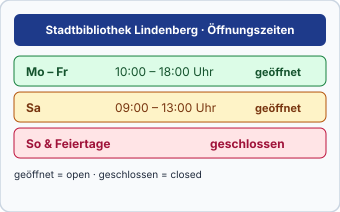

Media overview
All images, audio files and videos of this app with their source and licence.
Images

images/station-clock-greetings.svg© CC0-1.0Used on: Hello and Goodbye: First Greetings

images/du-sie-map.svg© CC0-1.0Used on: Informal du vs. Formal Sie

images/registration-form.svg© CC0-1.0Used on: Filling in a Simple Form

images/profile-card-steps.svg© CC0-1.0Used on: Introducing Yourself in Class

images/number-swap-diagram.svg© CC0-1.0Used on: Numbers, Prices and Phone Numbers

images/clock-halb-drei.svg© CC0-1.0Used on: Time, Days, Months and Dates

images/classroom-desk.svg© CC0-1.0Used on: School and Classroom Phrases

images/library-hours-sign.svg© CC0-1.0Used on: Reading Signs and Opening Hours

images/platform-board.svg© CC0-1.0Used on: Understanding Short Announcements

images/concert-poster.svg© CC0-1.0Used on: Help Alex Read a German Poster